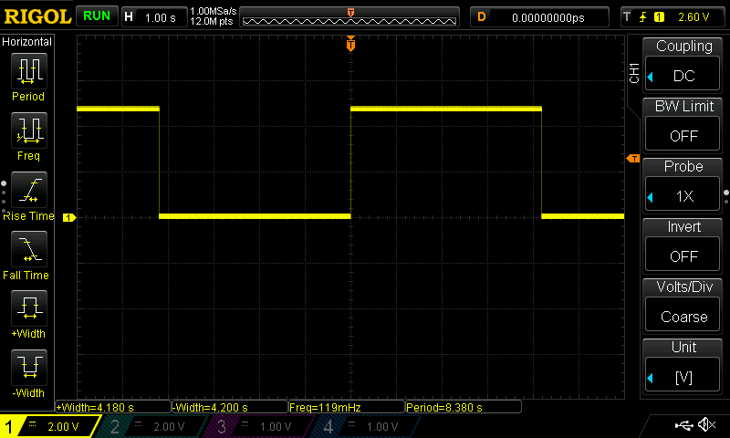
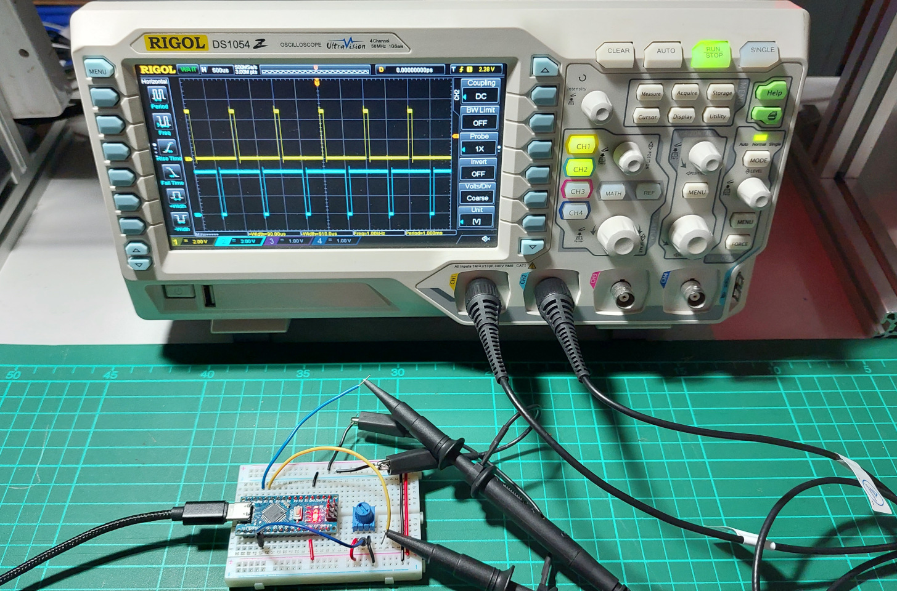
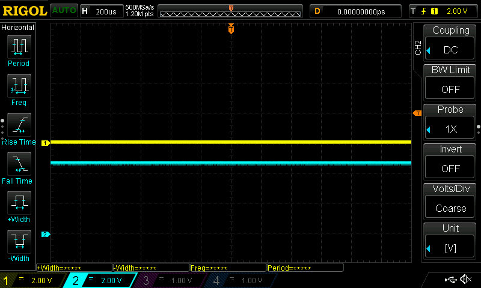

การใช้งาน Arduino TimerOne Library#
บทความนี้นำเสนอการใช้งาน Arduino TimerOne Library ในเบื้องต้นสำหรับบอร์ดไมโครคอนโทรลเลอร์ Arduino Uno / Nano ที่ใช้ชิป ATmega328P เช่น การเรียกใช้ฟังก์ชันที่มีคาบเวลาการทำงานคงที่ และการสร้างสัญญาณ PWM
Keywords: Arduino Nano / Uno, TimeOne Library, ATmega328P, PWM, Timer/Counter
▷ Arduino TimerOne Library#
TimerOne เป็น Arduino Library ที่สำหรับการเขียนโปรแกรมบอร์ดไมโครคอนโทรลเลอร์ เช่น บอร์ด Arduino Uno / Nano ที่ใช้ชิป ATmega328P และภายในชิปมีวงจรตัวนับที่มีชื่อว่า Timer/Counter (TC) มี 3 วงจร ได้แก่ TC0, TC1 และ TC2 รีจิสเตอร์สำหรับการเก็บค่าตัวนับมีขนาด 8 บิต ยกเว้น TC1 ที่มีขนาด 16 บิต
การใช้งาน TimerOne เพื่อทำคำสั่งในรูปแบบของการเรียกใช้ฟังก์ชันซ้ำด้วยอัตราคงที่ หรือ เพื่อสร้างสัญญาณ PWM (Pulse Width Modulation) จำนวน 2 ช่อง ได้พร้อมกัน มีความถี่เท่ากัน แต่ปรับค่า Duty Cycle ได้ต่างกัน
โดยปรกติแล้วคำสั่ง analogWrite(...)
ของ Arduino API จะเกี่ยวข้องกับการสร้างสัญญาณ PWM
เป็นเอาต์พุต และจะต้องใช้วงจร Timer/Counter ด้วย ถ้าเลือกใช้ขา D9 หรือ D10
ของบอร์ด Arduino เป็นเอาต์พุต การสร้างสัญญาณ PWM จะต้องใช้วงจร TC1
และสัญญาณที่ได้มีความถี่ 490Hz โดยประมาณ (เป็น Default Frequency
ผู้ใช้ไม่สามารถเลือกความถี่ได้โดยตรง)
TimerOne เป็นชื่อของ C++ Class ของไลบรารีดังกล่าว ซึ่งมีไฟล์ Source Code
สองไฟล์ที่เกี่ยวข้องคือ TimeOne.h (Header File) และ
TimerOne.cpp (C++ Class Implementation File)
ถ้าลองค้นหา Repository ใน GitHub จะพบว่ามีไลบรารีที่เกี่ยวข้องกับ TimerOne ดังนี้
github:PaulStoffregen/TimerOne
- ได้รับการพัฒนามาตั้งแต่ปีค.ศ. 2008 โดย Paul Stoffregen และนักพัฒนารายอื่นอีก
- รองรับการใช้งานชิป ATmega168/328, ATmega1280/2560 และ ATmega32U4
รูป: ซอร์สโค้ดและ GitHub Repository ของ TimerOne
ฟังก์ชันการทำงานของ TimerOne เกี่ยวข้องกับวงจร TC1
และในการเขียนโปรแกรมโดยใช้ TimerOne จะต้องมีการติดตั้งไลบรารีใน Arduino IDE ก่อน
โดยไปที่ Library Manager และค้นหาด้วยคำว่า TimerOne เมื่อพบแล้วให้คลิกเลือก และกดปุ่ม
Install และเวอร์ชันล่าสุดที่ได้ทดลองใช้คือ TimerOne v1.1.1 (Release Date: 2023-04-14)
รูป: การใช้ Library Manager เพื่อค้นหาและติดตั้งไลบรารี TimerOne
ในโค้ด Arduino Sketch จะต้องมีการเขียนประโยคคำสั่ง
เพื่อนำไลบรารีดังกล่าวมาใช้ ซึ่งก็คือคำสั่ง #include "TimerOne.h"
หรือ #include <TimerOne.h>
▷ โค้ดตัวอย่างที่ 1 การใช้ TimerOne เพื่อเรียกฟังก์ชันและทำให้ LED กระพริบด้วยอัตราคงที่#
Timer1 เป็นชื่อของตัวแปรที่อ้างอิงอ็อบเจกต์ (Object Reference)
และได้มีการสร้างเอาไว้แล้วในโค้ดของไลบรารี จากคลาส TimeOne
ดังนั้นคำสั่งแรกของการเริ่มต้นใช้งานสำหรับวงจรตัวนับ TC1 ก็คือ
Timer1.initialize()
ถัดไปคือคำสั่ง Timer1.attachInterrupt(...)
ซึ่งเป็นการเปิดใช้งานอินเทอร์รัพท์ของวงจรตัวนับ TC1
โดยจะต้องระบุว่า จะให้เรียกใช้ฟังก์ชันใด (เป็นฟังก์ชันสำหรับ Callback)
และมีการเว้นช่วงเวลาในการเกิดอินเทอร์รัพท์ หรือ มีคาบเวลา (Period)
การทำงานเท่าไหร่ ในหน่วยเป็นไมโครวินาที (Microseconds)
การเขียนโค้ดเพื่อเริ่มใช้งาน Timer1 และเรียกใช้ฟังก์ชันด้วยเว้นระยะเวลาเป็นคาบเวลา ทำได้สองแนวทางคือ
Timer1.initialize();
Timer1.attachInterrupt( callback_function, period_in_usec );
และ
Timer1.initialize( period_in_usec );
Timer1.attachInterrupt( callback_function );
#include "TimerOne.h"
// see: https://github.com/PaulStoffregen/TimerOne/
#define PERIOD_USEC (100000) // 100 msec
void setup() {
// Configure the onboard LED pin as an output pin.
pinMode( LED_BUILTIN, OUTPUT );
// Option 1
// 1) Intialize the TimerOne without specifying the period.
// 2) Enable the TimerOne interrupt for every 100 msec.
Timer1.initialize();
Timer1.attachInterrupt( timerOneCallback, PERIOD_USEC );
// Option 2
// 1) Initialize the TimerOne and specify the period (100 msec).
// 2) Enable the TimerOne interrupt.
//Timer1.initialize( PERIOD_USEC );
//Timer1.attachInterrupt( timerOneCallback );
}
void loop() { // no action
}
// Global variable
int led_state = 0; // used to keep the LED state.
void timerOneCallback( ) { // Callback function for Timer1
led_state = !led_state; // Toggle the LED state
digitalWrite( LED_BUILTIN, led_state ); // Write output pin
}
ในโค้ดตัวอย่างที่ 1 ฟังก์ชัน timerOneCallback() จะทำงานทุก ๆ 100 msec
และเมื่อทำงานในแต่ละครั้ง จะทำให้เกิดการสลับสถานะลอจิกที่ขา D13 ซึ่งต่อกับวงจร LED
บนบอร์ด ดังนั้น LED จะติดหรือดับ สลับกันไปทุกๆ 100 มิลลิวินาที
▷ โค้ดตัวอย่างที่ 2 การปรับคาบเวลาในการทำงานของ Timer1#
โค้ดตัวอย่างที่ 2 เป็นการทดลองใช้ค่าตัวเลขสำหรับการกำหนดคาบเวลาในการทำงานของ
Timer1 โดยแบ่งเป็นสองกรณี ค่าตัวเลขที่มากที่สุด (64*65536UL - 1)
และค่าตัวเลขที่น้อยที่สุด (1)
#include "TimerOne.h"
// 16MHz/1024/65536 = 0.238418Hz or 4.1943 seconds
#define MAX_PERIOD_USEC (64*65536UL - 1)
#define MIN_PERIOD_USEC (1)
#define PERIOD_USEC (MAX_PERIOD_USEC)
void setup() {
// Configure the onboard LED pin as an output pin.
pinMode( LED_BUILTIN, OUTPUT );
Timer1.initialize();
Timer1.attachInterrupt( timerOneCallback, PERIOD_USEC );
}
void loop() { // no action
}
// Global variable
int led_state = 0; // used to keep the LED state.
void timerOneCallback( ) { // Callback function for Timer1
led_state = !led_state; // Toggle the LED state
digitalWrite( LED_BUILTIN, led_state ); // Write output pin
}
ถ้าทดลองค่าสูงสุด (64*65536UL - 1) แล้ววัดสัญญาณเอาต์พุตด้วยออสซิลโลสโคป
จะได้ระยะเวลาในการเปลี่ยนหรือสลับสถานะลอจิกที่ขาเอาต์พุตดังนี้

รูป: ตัวอย่างการตั้งคาบเวลาไว้สูงสุด (วัดคาบได้ค่าประมาณ 4.2 วินาที)
แต่ถ้าลองตั้งค่าให้น้อยที่สุดคือ 1 usec เมื่อวัดสัญญาณจริง พบว่า
จะได้คาบเวลาประมาณ 9 usec ทั้งนี้ก็เป็นเพราะว่า การตอบสนองต่ออินเทอร์รัพท์ และการคำสั่งของฟังก์ชัน
timerOneCallback() ต้องใช้เวลาในการทำงานมากกว่า 1 usec
ดังนั้นในทางปฏิบัติก็ควรตั้งค่าคาบเวลา ไม่น้อยกว่า 10 usec
(ทั้งนี้ก็ขึ้นอยู่กับระยะเวลามากที่สุดในการทำงานของฟังก์ชัน Callback ด้วย)
รูป: ตัวอย่างการตั้งคาบเวลาไว้ 1usec แต่เมื่อวัดสัญญาณจริงได้ประมาณ 9 usec
รูป: ตัวอย่างการตั้งคาบเวลาไว้ 15usec
▷ โค้ดตัวอย่างที่ 3 การปรับคาบเวลาโดยรับค่าจากสัญญาณอินพุต-แอนะล็อก#
โค้ดตัวอย่างที่ 3 สาธิตการอ่านค่าจากขาแอนะล็อกอินพุต เพื่อใช้ปรับคาบเวลาของสัญญาณเอาต์พุต ถ้าต้องการให้สัญญาณเอาต์พุตปรับเปลี่ยนคาบเวลาได้ ก็สามารถใช้วิธีการอ่านแรงดันอินพุตจากสัญญาณ แอนะล็อกในช่วง 0V แต่ไม่เกิน 5V โดยใช้วงจรแบ่งแรงดันไฟฟ้าที่สร้างได้จากตัวต้านทานปรับค่าได้ นำมาต่อเข้าที่ขา A0 เพื่อใช้เป็นสัญญาณอินพุต
ค่าที่อ่านได้ด้วยคำสั่ง analogRead(...) จะอยู่ในช่วง 0 .. 1023
แล้วนำไปสเกลค่าและแปลงให้เป็นค่าตัวเลขสำหรับคาบเวลา โดยใช้คำสั่ง
map(...)
เช่น ในช่วง 100 .. 1000 usec
เพื่อใช้กับคำสั่ง Timer1.setPeriod(...)
#include "TimerOne.h"
#define MIN_PERIOD_USEC (100) // 100 usec
#define MAX_PERIOD_USEC (1000) // 1000 usec
void setup() {
// Configure the onboard LED pin as an output pin.
pinMode( LED_BUILTIN, OUTPUT );
Timer1.initialize( MIN_PERIOD_USEC );
Timer1.attachInterrupt( timerOneCallback );
}
void loop() {
// Read analog value (0..1023) at A0 pin.
int value = analogRead( A0 );
int period_usec = map( value, 0, 1023,
MIN_PERIOD_USEC, MAX_PERIOD_USEC );
Timer1.setPeriod( period_usec );
delay(100);
}
// Global variable
int led_state = 0; // used to keep the LED state.
void timerOneCallback( ) { // Callback function for Timer1
led_state = !led_state; // Toggle the LED state
digitalWrite( LED_BUILTIN, led_state ); // Write output pin
}
ตัวอย่างการวัดสัญญาณโดยหมุนปรับตัวต้านทานเพื่อให้ระดับแรงดันไฟฟ้าของสัญญาณอินพุต-แอนะล็อกมีการเปลี่ยนแปลง
รูป: หมุนปรับค่าให้ได้คาบเวลาประมาณ 1000 usec
รูป: หมุนปรับค่าให้ได้คาบเวลาประมาณ 100 usec
▷ โค้ดตัวอย่างที่ 4 การสร้างสัญญาณ PWM จำนวน 2 ช่องสัญญาณ#
โค้ดตัวอย่างที่ 4 สาธิตการสร้างสัญญาณ PWM จากวงจร TC1 ซึ่งสามารถสร้างสัญญาณ PWM ได้สองช่องสัญญาณพร้อมกัน แต่ต้องมีความถี่เท่ากัน ปรับค่า Duty Cycle ให้แตกต่างได้ และจะต้องใช้ขา I/O Pin สำหรับ TC1 เป็นเอาต์พุต คือ OC1A / PB1 และ OC1B / PB2 ซึ่งตรงกับขา D9 และ D10 ของบอร์ด Arduino Uno / Nano ตามลำดับ
#include "TimerOne.h"
#define DUTY_CYCLE(x) ((x)*(1024L)/100)
#define PERIOD_US (1000) // 1000 usec (1 msec)
void setup() {
Timer1.initialize();
Timer1.setPeriod( PERIOD_US );
// Set the initial duty cycle: 0..100%
int dc = 50;
// Convert the duty cycle to a 10-bit integer value
// and update the Timer1's PWM outputs.
Timer1.pwm( 9, DUTY_CYCLE(dc) ); // D9 / PB1 pin
Timer1.pwm( 10, DUTY_CYCLE(100-dc) ); // D10 / PB2 pin
}
void loop() { // no action
}

รูป: การวัดสัญญาณเอาต์พุตทั้งสองช่อง (PWM Frequency 1kHz, Duty Cycle 50%)
▷ โค้ดตัวอย่างที่ 5 การสร้างสัญญาณ PWM และปรับค่า Duty Cycle ได้#
โค้ดตัวอย่างที่ 5 สาธิตการอ่านค่าจากขาสัญญาณแอนะล็อก-อินพุต A0 มาปรับค่า Duty Cycle ของสัญญาณ PWM ทั้งสองสัญญาณ ถ้าสัญญาณช่องหนึ่งมีค่า Duty Cycle สัญญาณอีกช่องหนึ่งจะต้องมีค่าลดลง
#include "TimerOne.h"
#define DUTY_CYCLE(x) ((x)*(1024L)/100)
#define PERIOD_US (1000)
void setup() {
Serial.begin( 115200 );
Timer1.initialize();
Timer1.setPeriod( PERIOD_US );
// Set the initial duty cycle: 0..100%
int dc = 0;
// Convert the PWM duty cycle to a 10-bit integer value and
// update the Timer1's PWM outputs.
Timer1.pwm( 9, DUTY_CYCLE(dc) ); // D9 / PB1 pin
Timer1.pwm( 10, DUTY_CYCLE(100-dc) ); // D10 / PB2 pin
}
void loop() {
// Read analog value at A0 pin.
int value = analogRead(A0);
// Use the analog value to set the PWM duty cycle.
int dc = map(value,0,1024,0,100);
Timer1.pwm( 9, DUTY_CYCLE(dc) ); // D9 / PB1 pin
Timer1.pwm( 10, DUTY_CYCLE(100-dc) ); // D10 / PB2 pin
Serial.println( String("Duty Cycle: ") + dc );
delay(100);
}

รูป: การต่อวงจรแบ่งแรงดันไฟฟ้าด้วยตัวต้านทานปรับค่าได้ร่วมกับบอร์ด Arduino Nano
ตัวอย่างการปรับค่า Duty Cycle และการวัดสัญญาณ PWM ด้วยออสซิลโลสโคป มีดังนี้

รูป: สัญญาณ PWM ที่ขา D9 และ D10 ที่ได้มีการปรับค่า Duty Cycle ให้เพิ่มขึ้นหรือลดลง

รูป: สัญญาณ PWM ที่ขา D9 และ D10 เมื่อค่า Duty Cycle เป็น 0% และ 100% ตามลำดับ
▷ โค้ดตัวอย่างที่ 6 การสร้างสัญญาณ PWM และการเรียกใช้ฟังก์ชันตามคาบเวลา#
ในตัวอย่างที่ 6 ได้มีการแก้ไขเพิ่มเติมจากโค้ดตัวอย่างที่ 5 โดยมีการเปิดใช้อินเทอร์รัพท์
ให้มีการเรียกใช้ฟังก์ชัน timerOneCallback() เพื่อทำให้ LED กระพริบ
ทุกครั้งที่เกิดอินเทอร์รัพท์จาก TC1 ตามคาบเวลาที่กำหนดไว้ คือ 1000 ไมโครวินาที
จะมีการเพิ่มค่าตัวนับ ticks ครั้งละหนึ่ง ซึ่งจะนับค่าอยู่ในช่วง 0 .. 9 แล้วเริ่มต้นนับใหม่
เมื่อค่าของตัวแปร ticks มีค่าเท่ากับ 0 ในแต่ละรอบของการนับ
จะทำให้ LED สลับสถานะการติดหรือดับหนึ่งครั้ง
#include "TimerOne.h"
#define DUTY_CYCLE(x) ((x)*(1024L)/100)
#define PERIOD_US (1000)
void setup() {
//Serial.begin(115200);
pinMode( LED_BUILTIN, OUTPUT );
Timer1.initialize();
Timer1.setPeriod( PERIOD_US );
// Set the initial duty cycle: 0..100%
int dc = 50;
// Convert the PWM duty cycle to a 10-bit integer value and
// update the Timer1's PWM outputs.
Timer1.pwm( 9, DUTY_CYCLE(dc) ); // D9 / PB1 pin
Timer1.pwm( 10, DUTY_CYCLE(100-dc) ); // D10 / PB2 pin
// Activate the Timer1 alarm.
Timer1.attachInterrupt( timerOneCallback );
}
void loop() {
int value = analogRead(A0); // Read analog value at A0 pin.
// Use the analog value to set the PWM duty cycle.
int dc = map(value,0,1024,0,100);
Timer1.pwm( 9, DUTY_CYCLE(dc) ); // D9 / PB1 pin
Timer1.pwm( 10, DUTY_CYCLE(100-dc) ); // D10 / PB2 pin
// Serial.println( String("Duty Cycle: ") + dc );
delay(100);
}
// Global variable
int led_state = 0; // used to keep the LED state.
int ticks = 0; // used to count ticks.
void timerOneCallback( ) { // Callback function for Timer1
if (ticks == 0) {
led_state = !led_state; // Toggle the LED state
digitalWrite( LED_BUILTIN, led_state ); // Write output pin
}
ticks = (ticks+1) % 10;
}
รูป: การวัดสัญญาณ PWM ที่ขา D9 และสัญญาณที่ขา D13
▷ กล่าวสรุป#
บทความนี้ได้นำเสนอประโยชน์ของการใช้งานไลบรารี TimerOne สำหรับการเขียนโปรแกรม Arduino Sketch โดยใช้บอร์ดไมโครคอนโทรลเลอร์ Uno/Nano และมีตัวอย่างโค้ดให้นำไปทดลองใช้งานได้จริง
This work is licensed under a Creative Commons Attribution-ShareAlike 4.0 International License.
Created: 2024-01-17 | Last Updated: 2024-01-17